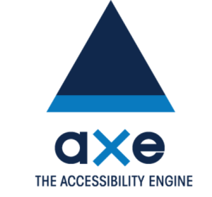

Un plan de tests automatisés
pour votre front-end
Le HTML, c’est la vie.
Pourquoi tester ?
Améliorer la qualité
Tester, c’est explorer de nouveaux domaines et acquérir de nouvelles compétences.
Et tout ça pour le Graal de nos métiers : un utilisateur satisfait — et par conséquent, un client heureux 🌈.
Définitions
- 🤖 Test automatisé
- Test dirigé par un automate.
- 🎯 Front-end
-
Un document HTML, disponible via un chemin,
éventuellement saupoudré de CSS et JS.
- ngrok permet de créer des tunnels sécurisés vers
localhost. - 🗺 Plan de test
- Stratégie adoptée en fonction d’un objectif précis.
- 📈 Budget
- Le budget est primordial afin de préciser un périmètre à cibler — et un niveau d’exigence raisonnable.
Tabous 🤐
Ce dont on ne parlera pas.
- Tests unitaires.
- Tests fonctionnels.
- tdd.
- Linter.
- Rédaction de tests.
Je n’ai que 40 min. ⌛
Les bons plans
Deux axes pour un bon plan :
- Les résultats doivent être intelligibles ;
- un référent doit être identifiable.
Sans ça, vous pissez dans un violon 🎻.
Le cambouis ⚙
Par l’axe du quoi
Les autres axes :
- Où : dans le navigateur (headless ?), dans l’IDE, dans les tâches automatisées, dans une VM, etc.
- Quand : dès la modification du code, au commit, au merge, au déploiement, en continu sur la prod…
- Avec quoi : un outil par domaine, un SaaS tout-en-un…
- Comment gérer les résultats : flux JSON, rapports PDF ou markdown, création de tickets à la volée, alerte Slack, etc.
Entrons dans le vif du sujet !
Qualité de code 🤖
Statistiques
Des indicateurs secondaires pour évaluer la complexité du code HTML et CSS :
- DOM Stats par John Otander ;
- StyleStats par Koji Ishimoto.
Accessibilité 👽

Disponible :
- en cli ;
- en extension navigateur ;
- branché à votre intégration continue ;
- dans Lighthouse, Protractor…
Tenon et Access Monitor
Service payant, via api. Access Monitor permet d’intégrer Tenon à WordPress :
- un cpt pour les rapports ;
- planification ;
- maintenu par Joe Dolson.
Sécurité 🔒
ZAP ⚡
Logiciel développé par l’owasp. Il dispose d’une api qu’on peut consommer grâce à un client Node.
🚨 Attention, ça pique !
Observatory
Mozilla propose un scanner qui vérifier les certificats SSL et les entêtes HTTP.
Il existe une interface de commande Node.
Performances 🚀
Phantomas
C’est un collecteur de métriques 📏 en cli, qui utilise PhantomJS 👻.
Louis est une tâche Gulp basée sur Phantomas qui compare une métrique à un budget défini.
Yellow Lab Tools s’appuie sur Phantomas.
Alternative
PSI est une version cli du PageSpeed Insights de Google.
Compatibilité 🚣
Navigation synchronisée
Je me sers de BrowserSync pour la navigation synchronisée.
PaaS
Certaines plateformes mettent à disposition des VM :
Tableaux de support
Les projets Do I Use et compat-tester sont prometteurs.
Non-rég. visuelle 😎
- Webdriver
- Eagle par Orange
- Wraith par la BBC
- BackstopJS
- Navigateur headless 🤕
- Un exemple avec Puppeteer et PixelMatch par Monica Dinculescu
- Avec Firefox :
firefox -screenshot 1024×768.png https://ffoodd.fr --window-size=1024,768 - Outils de comparaison
- En JavaScript : PixelMatch et Ressemble.js
git statuspour indiquer un changement
Référencement naturel 📊
On vérifie la base : title, description, auteur, h1, liens brisés…
Le reste est — plus ou moins — couvert par les tests de performances et d’accessibilité.
Vous pouvez tester ça vous même, mais SEO checker fait ça très bien en cli Node.
Pour plus d’infos, trouvez Daniel, aka SeoMix.
Les génériques 💉
C’est pas automatique.
- Dareboost ;
- Sonarwhal, peut se lancer en cli ;
- Lighthouse, embarqué dans Chrome — peut aussi se lancer en cli.
Opquast
La qualité web au sens large. Leur outil de reporting est très complet. Mais démarrez par les checklists ✅ !
Show time 🎉
Tâches Gulp
gulp.task('test', [
'validator',
'louis',
'axe'
]);
Événements
"scripts": {
"test": "gulp test",
"prepublish": "gulp test"
}
Dans Travis
language: node_js
node_js:
- "7"
before_script:
- npm install -g gulp-cli
script: gulp build && gulp travis
Par exemple, on peut bloquer une PR en cas de HTML invalide.
En prod
staats 2018.wptech.fr
Exploitation 🚧
À chaque déroulement des tests, prenez du temps pour corriger une erreur. Pour ça, il vous faudra :
- lire le message,
- parcourir la documentation correspondante,
- l’interpréter et la comprendre,
- mettre en place un correctif,
- évidemment tester à nouveau 🔂,
- et ne ne plus commettre cette erreur.
Conclusion 😇
Démarrez
Le plus important est de commencer. Restez indulgent : vos plans de test s’étofferont au fil du temps, et vos résultats s’amélioreront !
PS : Dans la plupart des domaines, les tests manuels demeurent indispensables. Performances perçues, contenus pertinents…
Merci
Et à bientôt ☺
Crédits
- Moteur de présentation : AccesSlide — par Access42 ;
- Pictogrammes : Rounded UI — par Marek Polakovic ;
- Typographie de titraille : Bello Pro — créée par Underware ;
- Typographie de labeur : Museo Slab — créée par Exljbris.